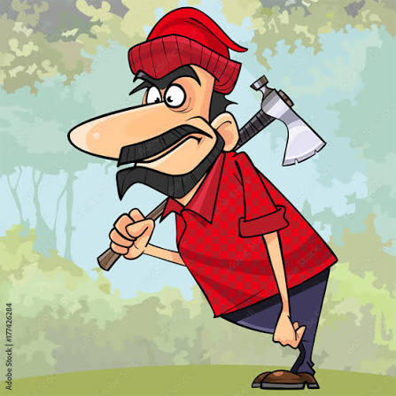

The Mad Man in the Woods Who Cut Almost a Forest by Himself

Deep in the woods, one man began cutting trees almost entirely by himself. What started as a simple task became a remarkable story that caught the attention of everyone around him.